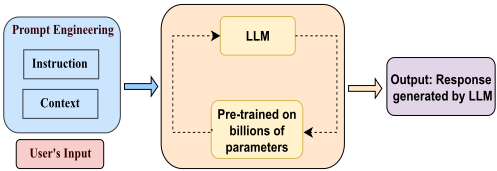
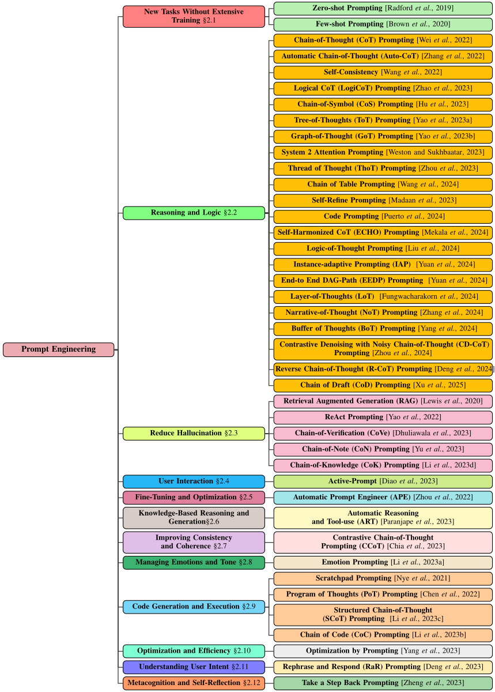

大语言模型（LLM）提示工程系统性综述：技术与应用
该综述系统梳理了面向 LLM 与 VLM 的 41 种提示工程技术，按应用领域分类，覆盖 zero-shot/few-shot、CoT 及其大量变体（Auto-CoT、Self-Consistency、ToT、GoT、CoD 等）、RAG、ReAct 以及 APE、OPRO 等自动提示优化方法。方法上采用系统性文献综述，为每种技术总结提示方法、应用场景、所用模型与数据集，并给出 taxonomy 分类图与汇总表，逐一分析优缺点。关键结论包括：CoT 使 PaLM 540B 在数学与常识推理基准达到 90.2% 准确率；CoD 在保持精度的同时减少约 80% 输出 token 与 76.2% 延迟；BoT 仅用多查询方法 12% 的计算成本在 10 个基准取得 SOTA。对团队而言，这是一份提示工程技术的索引式地图，可直接用于提示模式选型、内部培训与后续深入阅读的导航。
提示工程技术快速涌现、种类繁多，但缺乏系统化的组织与理解，尤其缺少以应用为中心的提示工程技术系统性梳理；本文旨在填补这一空白，为研究者与实践者提供结构化概览，并指出开放挑战与机会。
系统性文献综述：按应用领域对 41 种提示技术分类（从 zero-shot、few-shot、CoT 到 ToT、GoT、RAG、ReAct、APE、OPRO 等），对每种技术总结其提示方法、应用、涉及模型与数据集，分析优势与局限，并提供 taxonomy 分类图以及按应用、提示获取方式、提示轮次、模型、数据集、评测指标组织的汇总表（Table 1）。
CoT 提示使 PaLM 540B 在数学与常识推理基准达到 90.2% 准确率（state-of-the-art）
Self-Consistency 相比 CoT 基线在 GSM8K 提升 17.9%、SVAMP 11.0%、AQuA 12.2%、StrategyQA 6.4%、ARC-challenge 3.9%
CoS 将 ChatGPT 在 Brick World 任务准确率从 31.8% 提升至 92.6%，同时减少 65.8% 提示 token
ToT 在 Game of 24 达到 74% 成功率（CoT 仅 4%）；BoT 在 10 个基准取得 SOTA（Game of 24 +11%、Geometric Shapes +20%、Checkmate-in-One +51%），仅用 ToT 等多查询方法 12% 的计算成本
CoD 在部分任务以约 80% 输出 token 减少与平均 76.2% 延迟降低保持与 CoT 相当的精度
RAG 在 ODQA 基准上 exact match 达 TriviaQA 56.8%、Natural Questions 44.5%
APE 在 24 个任务中的 19 个超越人类撰写的提示；OPRO 优化出的提示在 GSM8K 超人类设计提示最多 8%、Big-Bench 部分挑战任务达 50%
ReAct 在 ALFWorld 与 WebShop 分别取得 34% 与 10% 成功率
论文指出已有 LLM 提示工程文献缺乏以应用为中心的系统性概览这一空白；相较此前工作，本文以应用领域为主线组织多达 41 种技术（含较新的 CoD、BoT、CD-CoT、IAP、EEDP 等），提供 taxonomy 分类图与按应用/提示获取方式/轮次/模型/数据集/指标组织的汇总表，并逐一分析各技术的优势与局限。
相关度级别：high
命中能力域：3.2 提示工程 | 3.1 上下文工程与记忆 | 3.3 Agent 架构与工具使用 | 3.5 评测与可靠使用
理由：直接命中 3.2 提示工程域：论文本身就是该域的系统综述，覆盖提示技术、自动提示优化（APE、OPRO、Auto-CoT、Active-Prompting）与思维链/推理提示的完整谱系。同时 RAG、Chain-of-Note、S2A、ThoT 等涉及检索增强与上下文组织（3.1）；ReAct、ART 涉及推理与工具调用的交织模式（3.3）；各技术的数据集/模型/指标汇总表，以及幻觉抑制（CoVe、CoN）与 token/延迟/计算成本优化（CoD、BoT）对应 3.5。对以'用好模型而非训练模型'为核心职责的团队，这是高价值的索引式参考资料。论文未涉及多智能体协作（3.4）。
建议动作：深入精读并做内部分享
arXiv:2402.07927v2 [cs.AI] 2025年3月16日
大型语言模型中的提示工程系统性综述：技术与应用
Pranab Sahoo 1 , Ayush Kumar Singh 1 , Sriparna Saha 1 , Vinija Jain 2 , 3 ∗ , Samrat Mondal 1 and Aman Chadha 2 , 3 *
1
印度理工学院巴特那分校计算机科学与工程系 2 3
斯坦福大学，Amazon AI
{pranab_2021cs25, ayush_2211ai27, sriparna, samrat}@iitp.ac.in, hi@vinija.ai,
hi@aman.ai
提示工程（prompt engineering）已成为扩展大语言模型（LLM）与视觉-语言模型（VLM）能力的一项不可或缺的技术。该方法利用被称为提示（prompt）的任务特定指令，在不修改核心模型参数的前提下提升模型效能。提示无需更新模型参数，仅凭给定的提示即可激发期望的模型行为，从而使预训练模型能够无缝集成到下游任务中。提示既可以是提供上下文以引导模型的自然语言指令，也可以是能够激活相关知识的学习型向量表示。这一蓬勃发展的领域已在从问答到常识推理的各类应用中取得成功。然而，对于多样化的提示工程方法与技术，目前仍缺乏系统性的梳理与理解。本综述论文针对这一空白，按应用领域分类，对提示工程的最新进展进行了结构化概述。针对每种提示方法，我们提供了总结，详细阐述其提示方法论、应用、所涉及的模型以及所使用的数据集。我们还深入探讨了每种方法的优势与局限，并提供了分类图和表格，汇总了各提示技术的数据集、模型及关键要点。这一系统性分析有助于更好地理解这一快速发展的领域，并通过揭示提示工程面临的开放性挑战与机遇，为未来研究提供助力。
提示工程（prompt engineering）已成为一种提升预训练大语言模型（LLM）与视觉-语言模型（VLM）能力的关键技术。它涉及策略性地设计面向特定任务的指令（称为提示），以便在不更改参数的情况下引导模型输出。提示工程的重要性在其对 LLM 与 VLM 适应性的变革性影响中体现得尤为明显。通过提供一种借助精心设计的指令来微调模型输出的机制，提示工程使这些模型能够在多样化的任务和领域中表现出色。这种适应性不同于传统范式——在传统范式中，模型通常需要重新训练或大规模微调才能获得面向特定任务的性能。这正是提示工程所带来的变革性承诺：拓展人工智能（AI）的边界，开启一个充满可能性的未来之门。在不断演进的格局中，持续开展的研究不断揭示提示工程领域内的创新方法与应用。提示工程能够引导模型响应，从而增强 LLM 在不同领域的适应性与适用性，其重要性由此得到凸显。当代提示工程的图景涵盖了一系列技术，既包括零样本（zero-shot）提示和少样本（few-shot）提示等基础方法，也包括“chain of code”提示等更为复杂的方法。提示工程这一概念最初在 LLM 中得到研究并推广 [Liu et al. , 2023]、[Tonmoy et al. , 2024]、[Chen et al. , 2023]，随后被扩展至 VLM [Wu et al. , 2023]、[Bahng et al. , 2022]。尽管针对 LLM 与 VLM 中提示工程的文献已十分丰富，但仍存在一个显著空白，尤其是缺乏对以应用为中心的提示工程技术的系统性概述。随着提示工程近期的长足进展，人们迫切需要一篇全面的综述，以提供对当代研究中应用与进展的细致理解。本综述深入探究了不断演进的提示工程图景，分析了超过 41 种不同的技术，并按其多样化的应用进行分类。我们采用系统性综述的方法，细致深入地剖析了多种前沿提示方法的复杂细节。我们的考察涵盖这些方法的应用、所使用的语言模型以及用于实验的数据集，从而对不断演进的提示工程图景提供了详细而细致的分析。此外，我们还讨论了这些技术的优缺点，为它们的相对有效性提供了洞见。我们呈现了一幅全面的分类图，展示这些技术如何在 LLM 能力的广阔图景中发挥作用（见 Fig.2），并提供了一个汇总数据集、所用模型与评估指标的表格（见 Table1）。从语言生成、问答到代码创建和推理任务，提示工程使 LLM 得以完成我们从未想过能够实现的壮举。通过弥合文献中的现有空白，本综述旨在为研究人员和从业者提供宝贵的资源，帮助他们洞悉最新进展，并促进对不断演进的提示工程图景的更深入理解。本文的结构安排如下：第 2 节按应用领域进行分类，介绍从基础到高级的提示工程技术；第 3 节给出结论，并对未来的研究工作提出思考。
∗ 该工作与作者在 Amazon 的职位无关。

在本节中，我们根据应用领域对提示工程（prompt engineering）技术进行了归类整理，并简要概述了提示技术的演进历程，涵盖从零样本提示（zero-shot prompting）到最新进展的发展过程。
零样本提示（zero-shot prompting）为利用大语言模型（LLM）带来了范式转变。该技术无需大量训练数据，而是依靠精心设计的提示来引导模型完成新任务 [Radford et al. , 2019]。具体而言，模型在提示中接收任务描述，但缺乏用于在特定输入-输出映射上进行训练的标注数据。随后，模型利用其已有的知识，基于给定的提示为新任务生成预测。
少样本提示（few-shot prompting）通过向模型提供少量输入-输出示例来引导其理解给定任务，这与不提供任何示例的零样本提示不同 [Brown et al. , 2020]。与不提供任何示例相比，即便仅提供少量高质量示例，也能提升模型在复杂任务上的表现。然而，少样本提示需要额外的 token 来容纳这些示例，对于较长的文本输入而言，这种开销可能变得难以承受。此外，提示示例的选择与组合会显著影响模型行为，而诸如偏好高频词之类的偏差仍可能影响少样本提示的结果。尽管少样本提示增强了模型处理复杂任务的能力，尤其是在 GPT-3 这类大型预训练模型上，但要想获得最佳性能并减轻模型非预期的偏差，细致的提示工程至关重要。
大语言模型（LLMs）在面对复杂推理时常常表现不佳，这限制了其潜力的发挥。为弥合这一差距，Wei 等人 [2022] 提出了思维链（Chain-of-Thought, CoT）提示技术，以一种能够促进连贯且逐步推理过程的方式来提示 LLMs。其主要贡献在于提出并探索了 CoT 提示，证明了与传统提示相比，CoT 提示在引导 LLMs 生成更有条理、更具深思性的回复方面的有效性。通过一系列实验，作者展示了 CoT 提示的独特品质，强调其能够引导 LLMs 沿着逻辑推理链进行思考的能力。这使得模型生成的回复能够体现出对给定提示更深入的理解。例如，提示中会展示一个多步骤数学应用题的推理过程和最终答案，并模仿人类将问题分解为逻辑中间步骤的方式。作者通过在 PaLM 540B 上使用 CoT 提示，在数学和常识推理基准测试（benchmark）中取得了最先进的性能，准确率达到 90.2%。
手动创建高质量的 CoT 示例既耗时又非最优。Zhang 等人 [2022] 提出了 Auto-CoT，通过"Let's think step-by-step"（让我们一步步思考）的提示自动引导 LLMs 生成推理链。考虑到单独生成的推理链可能存在错误，Auto-CoT 通过多样性采样增强了鲁棒性。它对各种问题进行采样，并为每个问题生成多条不同的推理链，从而构成最终的示例集合。这种自动化的多样性采样最大限度地减少了错误并增强了少样本学习（few-shot learning），从而无需再进行劳动密集型的人工推理链创建。Auto-CoT 展现出更优的性能，在使用 GPT-3 的情况下，在算术推理和符号推理任务上分别取得了 1.33% 和 1.5% 的平均准确率提升，超越了 CoT 范式。
Wang 等人 [2022] 提出了自洽性（Self-Consistency），这是一种解码策略，与思维链（CoT）提示中的贪心解码（greedy decoding）相比，能够提升推理性能。对于存在多条有效路径的复杂推理任务，自洽性通过从语言模型的解码器中进行采样来生成多样化的推理链。随后，它通过对这些采样得到的推理链进行边缘化，识别出最一致的最终答案。这种方法利用了如下观察结果：需要深入思考分析的问题往往蕴含更大的推理多样性，并由此导向最终解答。将自洽性与 CoT 提示相结合，在各种基准测试（benchmark）上带来了显著的准确率提升，例如与基线 CoT 提示相比，在 GSM8K 上提升 17.9%，在 SVAMP 上提升 11.0%，在 AQuA 上提升 12.2%，在 StrategyQA 上提升 6.4%，在 ARC-challenge 上提升 3.9%。
执行逻辑推理的能力对于大语言模型（LLM）解决跨领域的复杂多步骤问题至关重要。现有方法（如 CoT 提示）鼓励逐步推理，但缺乏有效的验证机制。Zhao 等人 [2023] 提出了逻辑思维链（LogiCoT）提示，这是一种神经符号框架，利用符号逻辑的原理以连贯且结构化的方式增强推理。具体而言，LogiCoT 应用归谬法（reductio ad absurdum）的概念来验证模型生成的每一步推理，并提供有针对性的反馈以修正错误的步骤。LogiCoT 能够通过“思考-验证-修订”（think-verify-revise）循环减少逻辑错误和幻觉。在 Vicuna33b 和 GPT-4 上开展的实验结果凸显了 LogiCoT 对推理能力的显著提升：与 CoT 相比，在 GSM8K 数据集上分别提升了 0.16% 和 1.42%，在 AQuA 数据集上分别提升了 3.15% 和 2.75%。

大语言模型（LLMs）由于依赖自然语言，在涉及复杂空间关系的任务中常常表现不佳，而自然语言容易受到歧义和偏见的影响。为了克服这一局限，Hu 等人 [2023] 提出了符号链（Chain-of-Symbol, CoS），采用精简符号来代替自然语言。CoS 具有显著优势：提示清晰简洁、增强了 LLM 的空间推理能力，并提升了人类可解释性。CoS 也面临一些挑战，例如可扩展性、泛化能力、与其他技术的集成，以及基于符号的 LLM 推理的可解释性。值得注意的是，CoS 的应用显著提升了 ChatGPT 的性能，在 Brick World 任务上将准确率从 31.8% 提升至令人瞩目的 92.6%。此外，CoS 可将提示 token 减少多达 65.8%，在保持高准确率的同时简化了流程。
Yao 等人 [2023a] 和 Long [2023] 提出了思维树（Tree-of-Thoughts, ToT）框架，以增强面向需要探索和前瞻推理的复杂任务的提示能力。ToT 对思维链（CoT）提示进行了扩展，通过管理由中间推理步骤构成的树结构来实现，这些中间推理步骤被称为“思维”（thoughts）。每个思维代表一段朝最终解决方案推进的连贯语言序列。这种结构使语言模型能够通过评估各个思维在解决问题过程中所产生的进展来进行审慎的推理。ToT 将模型生成和评估思维的能力与广度优先搜索、深度优先搜索等搜索算法相结合。这使得模型能够在多条推理链之间进行系统性探索，既能前瞻性地拓展有希望的方向，也能在所得解不正确时进行回溯。ToT 在 Game of 24 任务中表现卓越，成功率达到 74%，而 CoT 仅为 4%。此外，在词级任务中，ToT 以 60% 的成功率优于 CoT 的 16%。
人类思维过程固有的非线性特性对 CoT 提示的传统顺序方法提出了挑战。Yao 等人 [2023b] 提出了“图思维（Graph of Thoughts, GoT）”提示，这是一种基于图的框架，对传统顺序方法加以推进，以更好地契合人类思维的非线性特征。该框架允许对各种想法进行动态交互、回溯和评估，能够聚合与组合来自不同分支的思维，从而摆脱了思维树的线性结构。其主要贡献包括将推理过程建模为有向图，并提供具有多种转换操作的模块化架构。该框架被呈现为一种通用且动态的语言模型提示方法，能够捕捉人类思维过程的复杂性并增强模型能力。GoT 推理模型相比 CoT 基线取得了显著提升，在 GSM8K 上使用 T5-base 将准确率提高了 3.41%，使用 T5-large 提高了 5.08%。在 ScienceQA 上，使用 T5-base 时其准确率比当前最先进的 MultimodalCoT 提高了 6.63%，使用 T5-large 时提高了 1.09%。
基于 Transformer 的大语言模型（LLM）中的软注意力机制容易引入无关的上下文信息，从而对 token 生成产生不利影响。为解决这一问题，Weston 和 Sukhbaatar [2023] 提出了 System 2 Attention（S2A），利用 LLM 的推理能力，通过重新生成输入上下文来选择性地关注相关部分。S2A 采用两步流程，通过上下文重新生成以及基于精炼后上下文的响应生成来提升注意力与响应质量。S2A 的有效性在多种任务上进行了评估，包括事实性问答、长文本生成和数学应用题。在事实性问答中，S2A 达到了 80.3% 的准确率，展现出事实性的显著提升。在长文本生成中，它提升了客观性，获得了 5 分制下 3.82 的评分。
Zhou 等人 [2023] 提出了思维线索（Thread of Thought, ThoT），这是一种旨在增强 LLM 在混乱上下文中推理能力的提示技术。ThoT 受人类认知启发，系统地审视冗长的上下文并将其划分为可管理的片段以进行增量分析，采用两阶段方法：LLM 首先对每个片段进行总结和检查，然后再精炼信息以生成最终响应。ThoT 的灵活性使其成为一个多功能的“即插即用”模块，能够在不同模型和提示方法中增强推理能力。在问答和对话数据集上的评估显示，性能分别显著提升了 47.20% 和 17.8%，尤其是在混乱上下文中。
像 CoT、PoT 和 ToT 这类方法通过自由格式的文本或代码来表示推理步骤，在处理复杂的表格场景时面临挑战。Wang 等人 [2024] 的研究提出了一种名为 Chain-of-Table 的开创性提示技术。该方法通过在表格上动态生成并执行常见的 SQL/DataFrame 操作来实现逐步的表格推理。这一过程的迭代特性能够不断增强中间结果，使 LLM 能够通过逻辑可视化的推理链做出预测。值得注意的是，Chain-of-Table 在两个基准测试表格数据集上持续提升了性能，在 TabFact 上提升了 8.69%，在 WikiTQ 上提升了 6.72%。
Madaan 等人 [2023] 提出的 Self-Refine 提示技术通过模型自生成的反馈对输出进行迭代式改进，从而提升 LLM 的性能，这一过程模拟了人类的修订方式。尽管 LLM 能够处理广泛的任务，但它们在应对复杂目标、模糊目标或多步推理时常常表现不佳，导致初始回答存在不准确之处或逻辑缺陷。受人类迭代式改进的启发，Self-Refine 使 LLM 能够通过一个结构化的三步流程来改进其输出：生成初始回答、提示模型对自身输出进行批评，以及根据该反馈对回答进行改进。这一循环持续进行，直至满足预定义的停止准则，从而使模型能够产生更准确、更贴合上下文的结果。与仅依赖单步回答的传统提示方法不同，Self-Refine 促进了渐进式改进，使其在需要细致推理的任务中尤为有效。实验结果表明该方法带来了显著的性能提升：GPT-4 在代码优化任务上提升了 8.7 分，在代码可读性上提升了 13.9 分，在情感反转任务上提升了 21.6 分，展示了其在各个领域增强 LLM 推理能力与适应性的潜力。
在代码上进行预训练能够增强大语言模型（LLM）的推理能力，但驱动这一提升的底层机制仍知之甚少。为探究这一问题，Puerto et al. [2024] 研究了输入表示对 LLM 推理的影响，具体探讨了将自然语言（NL）问题重新表述为代码是否能激发条件推理能力。由此引出了代码提示（Code Prompting）技术，该技术将 NL 任务重新表述为结构化代码，使得无需依赖外部代码执行即可直接提示 text+code LLM。在三个推理基准测试（benchmark）——ConditionalQA、BoardgameQA 和 ShARC——上进行的实验表明，代码提示显著优于传统的基于文本的提示。平均而言，GPT 3.5 取得了 8.42 F1 分数的性能提升，而 Mistral 在三个数据集上平均提升了 4.22。
尽管思维链（Chain-of-Thought, CoT）提示能够增强大语言模型（LLM）的推理能力，但诸如 Auto-CoT 这类自动化生成示例的方法仍面临误导性相似性（相似示例中包含错误的推理依据）和低效多样性（模式不相关或过度多样）带来的挑战。为解决这些问题，Mekala 等人 [2024] 提出了 ECHO，这是一种自协调提示框架，能够将多样化的推理路径统一为一致的模式，在自动化与鲁棒性之间取得平衡。ECHO 通过三个关键阶段运行：（1）问题聚类（Question Clustering），利用 Sentence-BERT 嵌入和 k-means 将问题划分为若干簇；（2）示例采样（Demonstration Sampling），从每个簇中选取具有代表性的问题，并使用 Zero-Shot-CoT 生成推理依据；（3）示例统一（Demonstration Unification），通过动态提示机制对推理依据进行迭代细化，以对齐推理模式。这一过程在保留适应性的同时，最大限度地减少了由多样性引入的噪声。在 10 个推理基准测试（benchmark）（算术、常识、符号）上，ECHO 平均超越 Auto-CoT 2.8%，同时展现出更高的效率。在示例数量减少 50% 的情况下，它仍能保持性能，仅出现 -0.8% 的降幅，而 Few-Shot-CoT 的降幅为 -1.3%。该方法在 Mixtral-8x7B 上也取得了相对 Auto-CoT 2.3% 的提升，但仍落后于 GPT-3.5，这一差距被归因于推理依据质量的差异。
大语言模型（LLMs）常常表现出不忠实的推理，即生成的结论与中间推理步骤相悖。Logic-of-Thought 提示 [Liu et al., 2024] 是一种神经符号框架，旨在通过利用从命题逻辑中提取的逻辑信息来丰富提示，从而缓解这一问题。LoT 分三个阶段运行：（1）逻辑抽取（Logic Extraction），在此阶段 LLM 从输入文本中识别命题及逻辑关系；（2）逻辑扩展（Logic Extension），在此阶段一个基于 Python 的模块运用形式逻辑定律（如逆否律）来推断出额外的表达式；（3）逻辑翻译（Logic Translation），在此阶段将扩展后的逻辑重新渲染为自然语言，并附加到原始提示中，以确保上下文保真度。此外，Logic-of-Thought 被设计为可与思维链（CoT）、自洽性（Self-Consistency）以及思维树（ToT）提示等其他提示策略无缝集成。据报道的评估结果显示，Logic-of-Thought 能够将 ReClor 基准测试上 CoT 的准确率提升 4.35%，将 LogiQA 上结合自洽性的 CoT 提示性能提升 5%，并进一步将 ProofWriter 数据集上 ToT 提示的性能提升 8%。另外，通过在整个过程中保留自然语言表示，Logic-of-Thought 避免了可能损害其他神经符号系统（如 SatLM）的符号抽取错误。
Yuan 等人 [2024] 针对静态任务级提示（例如 "Let's think step by step"）在零样本思维链（CoT）推理中的泛化局限，提出了实例自适应提示（Instance-Adaptive Prompting, IAP），这是一个由显著性驱动的框架，旨在动态地为各个实例定制提示。通过对注意力层的信息流分析，作者识别出了不同的模式：有效的推理与浅层中从问题到提示的强语义流、以及深层中从整合的问题-提示表示到推理依据的强语义流相关；相比之下，碎片化或微弱的信息流则预示着欠佳的推理性能。IAP 通过两种自适应策略来优化推理保真度。第一种是 IAP-ss（Sequential Substitution，顺序替换），通过迭代测试提示直至满足预定义的显著性阈值来提升效率。第二种是 IAP-mv（Majority Vote，多数投票），通过聚合多个提示上的显著性分数来确定共识答案，从而优先保证鲁棒性。实证评估凸显了 IAP 的广泛适用性：在数学推理任务（GSM8K、SVAMP）中，与静态提示相比，IAP-mv 分别将 LLaMA-3-8B 和 Qwen-14B 的性能提升了 +1.82% 和 +3.31%；在因果判断任务上，它取得了 19.25% 的准确率，优于 16.04% 的基线；并且在使用 Qwen-14B 的 MMLU 常识推理上，它以 +21.7% 的优势超越了 Self-Discover。
端到端DAG路径（End-to-End DAG-Path，EEDP）提示 [Hong et al. , 2024] 解决了传统图扁平化方法（如邻接表和边表）的局限性，这类方法在面向LLM的图相关任务中难以进行长距离推理。EEDP的核心洞察在于，传统的扁平化表示往往会丢失对有效推理至关重要的长程依赖关系。为缓解这一问题，EEDP优先处理连接图端点（入度或出度为零的节点）的主干路径，同时保留邻接表以维持局部上下文信息。EEDP框架通过三个关键阶段运行：（1）使用广度优先搜索（BFS）对输入图进行预处理，将其转化为有向无环图（DAG）以消除环；（2）提取端点之间的层次化路径；（3）使用差分指针算法压缩共享路径段，在分子图上有效将token长度减少了55%。EEDP在边预测连通性预测（EPCP）和边预测距离预测（EPDP）等任务上进行了评估，使用了教育类（ Merged_1000 ）和分子类（ ZINC_test_2500 ）数据集。评估结果凸显了相比传统基线的显著性能提升：EPCP在 Merged_1000 上准确率提升了+10.21%，在 ZINC_test_2500 上提升了+16.76%；类似地，EPDP在 Merged_1000 上实现了+4.73%的准确率提升，在 ZINC_test_2500 上更是取得了高达+30.13%的惊人提升。
大语言模型（LLM）在许多推理任务中展现出强大的性能，但在精确率-召回率权衡和可解释性方面经常面临挑战，尤其是在复杂的法律检索场景中。思维层（Layer-of-Thoughts, LoT）提示 [Fungwacharakorn et al. , 2024] 引入了一种分层框架，利用约束层次来构建推理过程的结构，从而同时提升检索准确率和可解释性。在法律文档检索的背景下，LoT 将推理组织为“层思维”（layer thoughts，概念阶段）和“选项思维”（option thoughts，部分解决方案），并应用顺序约束来迭代地过滤和精炼候选响应。例如，该框架采用三层流程：（1）关键词过滤层（Keyword Filtering Layer, KFL），提取 LLM 生成的关键词，并使用诸如 at-least-k 之类的指标对文档进行初步过滤；（2）语义过滤层（Semantic Filtering Layer, SFL），基于多级相关性标准和聚合指标对文档进行优先级排序；（3）最终确认层（Final Confirmation Layer, FCL），针对原始查询对剩余候选进行验证。通过整合硬约束（必需）和软约束（优先），LoT 不仅提供了可解释的推理，而且性能超越了最先进的模型，例如，在日本民法检索上取得了 0.835 的 F2 分数（精确率为 0.838，召回率为 0.839），而 JNLP 为 0.807，并且在德国交通法场景中达到了接近完美的召回率（0.966）。
时序推理（temporal reasoning）仍然是 LLM 面临的一项重大挑战，尤其是在从无序事件中推断全局时序关系方面。为了评估这一能力，Zhang 等人 [2024] 提出了 Temporal Graph Generation（TGG，时序图生成），这是一个旨在评估 LLM 构建表示事件时间线的有向无环图（DAG）能力的基准测试（benchmark）。实验结果显示，较小的 LLM（<10B）落后于 GPT-3.5/4 约 50%，即使是 GPT-4 也因对齐约束而面临困难。为克服这些局限，作者提出了 Narrative-of-Thought（NOT），这是一种无需额外模型训练即可增强时序推理能力的提示策略。NOT 包含三个核心组件：（1）结构化表示（Structural Representation），将事件封装在 Python 类中并通过代码补全进行处理；（2）NOT 提示模板（NOT Prompting template），生成具有时序依据的叙述以引导时序图的构建；（3）叙事感知示例（Narrative-Aware Demonstrations），利用 GPT4 生成的少样本示例，这些示例在简洁性与准确性方面均经过优化。结果表明，NOT 显著提升了小型 LLM 的性能，其中 LLaMA3-8B 取得了 42.2 的 F1 分数，接近 GPT-3.5 的 45.7，同时展现出更优的结构连贯性。
现有的提示方法往往难以在复杂推理中平衡通用性、效率与鲁棒性。为解决这一问题，Yang 等人 [2024] 提出了思维缓冲（Buffer of Thoughts, BoT），这是一种通过可复用的高层推理模式来增强 LLM 的框架。BoT 通过引入一个从多样任务中提炼“思维模板”（thought-templates）的元缓冲区（meta-buffer），以及一个随着新问题的求解而持续对其进行精炼的动态缓冲区管理器（buffer-manager），克服了单次查询方法（如对人工示例的依赖）和多次查询方法（如计算效率低下）的局限性。BoT 检索任务特定的思维模板（例如结构化的问题求解方法）并对其进行自适应实例化，模拟人类的类比推理，从而免除了手动提示设计与递归探索。在 10 个基准测试（benchmark）上的实验表明，BoT 达到了最先进的性能，在 Game of 24 上取得 11% 的提升，在 Geometric Shapes 上取得 20% 的提升，在 Checkmate-in-One 上取得 51% 的提升，同时仅使用相当于 Tree-of-Thoughts 等多次查询方法 12% 的计算成本。值得注意的是，BoT 还能增强较小的模型，Llama3-8B + BoT 在准确率上超越了 Llama3-70B，展现了让高效推理得以大规模普及的潜力。
带噪声思维链的对比去噪（Contrastive Denoising with Noisy Chain-of-Thought, CDCoT）[Zhou et al. , 2024] 解决了思维链（chain-of-thought, CoT）提示中“噪声推理依据”（noisy rationales）的挑战，即无关或错误的中间推理步骤会降低大语言模型（LLM）的性能。NoRa（Noisy Rationales）数据集凸显了这一问题，其结果表明，大语言模型在使用有缺陷的推理依据时，表现往往比完全不提供示例时更差，因为它们倾向于模仿错误的推理。自我修正（self-correction）和自洽性（self-consistency）等现有方法只能提供有限的解决方案：自我修正在缺乏外部反馈的情况下会失效，而自洽性只是选择出现频率最高的答案，并未解决推理中的缺陷。CD-CoT 通过将噪声推理依据与干净的推理依据进行对比、改写有缺陷的示例、选择最优推理路径，并对最一致的答案进行投票，从而缓解了这一问题。实验表明，CD-CoT 平均将准确率提升了 17.8%，显著优于基线方法，并增强了大语言模型在推理密集型任务中的鲁棒性。
Deng 等人 [2024] 提出了逆向思维链（R-CoT）流水线，这是一种通过解决数据集质量低、多样性差和保真度不足等局限来增强大型多模态模型（LMM）几何推理能力的新方法。R-CoT 分两个阶段运行：GeoChain 阶段生成高保真的几何图像，并对几何关系（如中线、半径）给出详细的逐步描述；Reverse A&Q 阶段则利用大语言模型（LLM）从推理链中推导出问题，从而确保准确的多步骤问题生成。通过优先进行答案感知的问题合成，R-CoT 减轻了 LMM 中的视觉幻觉和推理错误。由此得到的 GeoMM 数据集包含按复杂度分类的 20 种几何图形，并纳入了现有数据集（如 MA VIS 和 GeomVerse）中常常缺失的关系型问题。GeoMM 将高保真图像与多样化的问答对相结合，并通过几何定理和线条操作加以丰富。实验结果表明，采用 R-CoT 训练的模型达到了最先进的性能，其中 8B 参数模型在 MathVista 上超越 GPT-4o 达 12.5%，在 GeoQA 上超越 14.5%，而较小的模型（2B、7B）也创下了新的基准。
草稿链（Chain of Draft, CoD）[Xu et al. , 2025]，一种旨在提升复杂推理任务效率的新型提示策略。与强调详细逐步推理的传统思维链（CoT）提示不同，CoD 在每一步都生成简洁且信息密集的输出，模拟了人类解决问题时仅记录关键见解的策略。虽然 CoT 能够提升推理准确率，但往往会导致输出冗长并增加计算成本。CoD 通过限制每个推理步骤中的用词量来缓解这一问题，在不牺牲准确率的前提下降低了延迟和 token 消耗。这种以效率为导向的方法对于计算资源和响应时间至关重要的现实应用尤为宝贵。在算术、常识和符号推理等基准测试上的实验结果表明，CoD 在准确率上与 CoT 相当甚至更优，同时显著降低了 token 使用量和延迟。在某些情况下，CoD 在输出 token 减少 80%、平均延迟降低 76.2% 的情况下达到了相当的准确率，展示了其作为传统提示策略的轻量级且有效替代方案的潜力。
大语言模型（LLM）已经彻底改变了文本生成，然而其对有限且静态的训练数据的依赖阻碍了准确响应的生成，尤其是在需要外部知识的任务中。传统提示方法力有不逮，需要代价高昂的重新训练。检索增强生成（RAG）[Lewis et al. , 2020] 作为一种新颖的解决方案应运而生，将信息检索无缝地融入提示过程之中。RAG 分析用户输入，构造有针对性的查询，并在预先构建的知识库中搜寻相关资源。检索到的片段被纳入原始提示中，为其补充了上下文背景。经过增强的提示使 LLM 能够生成兼具创造性与事实准确性的响应。RAG 的敏捷性克服了静态局限，使其成为需要最新知识的任务中的一项颠覆性技术。在开放域问答（ODQA）基准测试上，RAG 的表现优于 seq2seq 模型和任务专用架构，取得了精确匹配（exact match）分数，在 TriviaQA 上最高达到 56.8%，在 Natural Questions 上达到 44.5%。
与以往将推理与行动分开处理的研究不同，ReAct [Yao et al. , 2022] 使 LLM 能够同时生成推理轨迹和任务特定动作。这种交错进行的过程增强了推理与行动之间的协同作用，使模型能够在处理异常情况的同时归纳、跟踪和更新行动计划。ReAct 被应用于多种语言和决策任务，展现出优于最先进基线方法的有效性。值得注意的是，在问答（HotpotQA）和事实核查（Fever）任务中，ReAct 通过与一个简单的 Wikipedia API 交互，解决了幻觉和错误传播问题，产生了更具可解释性的任务求解轨迹。此外，在 ALFWorld 和 WebShop 等交互式决策基准测试中，ReAct 超越了模仿学习和强化学习方法，仅凭极少的上下文示例便分别取得了 34% 和 10% 的显著成功率。
为了解决大语言模型（LLM）中的幻觉问题，Dhuliawala 等人 [2023] 提出了链式验证（Chain-of-Verification, CoVe），该方法包含一个系统化的四步流程：模型首先生成基线响应，然后规划验证问题以检查其工作，接着独立回答这些问题，最后生成融合验证结果的修订响应。通过这种深思熟虑的多步骤方法对其工作进行验证，LLM 增强了逻辑推理能力，即使在存在矛盾信息的情况下也能减少错误。CoVe 模拟人类的验证过程，以增强 LLM 输出的连贯性和精确性。在列表式问题、问答（QA）和长文本生成任务上的实验表明，CoVe 在保持事实的同时减少了幻觉 [Sahoo et al., 2024]。聚焦的验证问题有助于模型识别并纠正其不准确之处。
检索增强语言模型（Retrieval-augmented language models, RALMs）通过引入外部知识来增强大型语言模型，以减少事实性幻觉。然而，检索到的信息其可靠性并无保证，可能导致被误导的响应。标准的 RALM 难以评估自身知识的充分性，在缺乏信息时往往无法以“未知”作答。为应对这些挑战，Yu et al. [2023] 提出了一种新方法，通过处理含噪、无关的文档并准确应对未知场景，来提升 RALM 的鲁棒性。CoN 系统性地评估文档相关性，强调关键且可靠的信息以过滤掉无关内容，从而生成更精确、更贴合上下文的响应。在多个开放域问答数据集上的测试展现了显著改进，包括：对于含噪检索文档，精确匹配（exact match）分数平均提升 +7.9；对于超出预训练知识的问题，拒答率提升 +10.5。
传统的 LLM 提示技术已被证明在处理基础任务方面十分强大。然而，由于复杂的推理挑战，其效能会有所下降，常常导致输出不可靠，充斥着事实性幻觉且思维过程不透明。这一局限源于它们依赖固定的知识来源、结构化查询生成效率低下，且缺乏能够充分引导 LLM 的渐进式纠正。受人类问题解决方式的启发，知识链（Chain-of-Knowledge, CoK）[Li et al. , 2023d] 系统性地将复杂任务分解为协调良好的多个步骤。该过程始于一个全面的推理准备阶段，在此阶段中建立上下文并界定问题。随后，进入动态知识适配阶段，从多种来源（如其内部知识库、外部数据库以及给定的提示）中细致地收集证据。
Diao 等人 [2023] 提出了 Active-Prompting，作为使 LLM 适应多样化推理任务这一挑战的解决方案。他们通过提出 Active-Prompt 来解决这一问题，该方法借助带有思维链（Chain-of-Thought, CoT）推理的任务特定示例提示，提升 LLM 在复杂问答任务上的表现。与依赖固定人工标注示例集的现有 CoT 方法不同，Active-Prompt 引入了一种确定最具影响力问题以进行标注的机制。该方法从基于不确定性的主动学习（uncertainty-based active learning）中获得启发，利用多种度量来刻画不确定性，并选择最不确定的问题进行标注。Active-Prompting 展现出卓越的性能，在 textdavinci-002 和 code-davinci-002 上的八个复杂推理任务中，分别平均超出 self-consistency 7.0% 和 1.8%，取得了最先进（state-of-the-art）的结果。
尽管为 LLM 构建有效的提示传统上对专家标注者而言是一项费力的任务，Zhou 等人 [2022] 提出了 Automatic Prompt Engineer（APE），作为一种为 LLM 自动生成与选择指令的创新方法。APE 通过为特定任务动态生成并选择最具影响力的提示，摆脱了静态、人工设计提示的局限性。这一巧妙的方法分析用户输入、构建候选指令，然后利用强化学习选择最优提示，并使其即时适应不同的上下文。在多样化的 BIG-Bench 套件和思维链（CoT）推理任务上开展的大量测试展现了 APE 的卓越能力，其在大多数情况下（24 个任务中的 19 个）超越了人类撰写的提示，并显著提升了 LLM 的推理能力。这一自动提示工程领域的突破为 LLM 以更高的效率和适应性应对更广泛的任务铺平了道路，释放了它们在各类应用中的全部潜力。
有限的推理能力以及缺乏对外部工具的利用，阻碍了 LLM 在复杂任务中发挥其潜力。Paranjape 等人 [2023] 提出了自动推理与工具使用（Automatic Reasoning and Tool-use, ART），以应对这一关键障碍，使 LLM 能够对多步骤过程进行推理并无缝整合外部专业知识。ART 弥合了推理方面的差距，使 LLM 能够解决复杂问题，并超越简单的文本生成。通过整合外部工具来获取专业知识和执行计算，ART 释放了前所未有的多功能性，并使 LLM 的输出具备现实世界的相关性。这使得 LLM 能够在科学研究、数据分析乃至决策支持等多样化领域中发挥作用。ART 超越了传统的提示技术，通过结构化程序自动执行推理步骤，从而免去了繁琐的手工构建。其动态的工具集成机制确保了顺畅的协作：暂停生成以纳入外部工具的输出，随后无缝恢复生成流程。在具有挑战性的基准测试（benchmark）（BigBench 和 MMLU）上的实证结果表明了 ART 的有效性，它超越了传统提示方法，在某些情况下甚至可与手工构建的示例相媲美。
面向大语言模型（LLM）的传统思维链（CoT）提示往往忽略了一个关键要素：从错误中学习。这正是对比思维链提示（Contrastive Chain-of-Thought Prompting, CCoT）[Chia et al. , 2023] 的用武之地，它在原始提示之外同时提供有效与无效的推理示范。想象一下在探索地图时，既掌握正确的路径，也了解需要避开的错误转弯——这就是对比 CoT 的优势！这种双视角方法在 SQuAD 和 COPA 等推理基准测试（benchmark）上得到了验证，它促使 LLM 进行逐步推理，与传统 CoT 相比，在策略推理和数学推理评估中带来了 4-16% 的提升；当与自洽性（self-consistency）技术相结合时，性能还可进一步提升约 5%。然而，这一技术仍存在一些悬而未决的问题，例如如何针对多样化的问题自动生成对比示范，以及它能否适用于推理之外的其他自然语言处理（NLP）任务。
尽管 LLM 在各种任务上展现出令人印象深刻的能力，但其理解心理和情感线索的能力仍不确定。Li 等人 [2023a] 的研究通过引入 EmotionPrompt，回应了围绕 LLM 理解情感线索能力的不确定性。他们从关于语言对人类表现影响的心理研究中汲取灵感，在提示中附加 11 句情感刺激语句，以增强 LLM 的情感智能。实验结果表明，这些刺激能够被无缝整合，显著提升了 LLM 在各种任务上的表现。EmotionPrompt 在指令归纳（instruction induction）上取得了 8.00% 的相对提升，在 BIG-Bench 任务上取得了高达 115% 的提升，凸显了其在增强 LLM 处理情感信号能力方面的有效性。一项涉及 106 名参与者的评估显示，与标准提示相比，采用 EmotionPrompt 时，生成式任务在性能、真实性和责任性指标上平均提升了 10.9%。
尽管基于 Transformer 的语言模型在为基础编程任务生成代码方面表现出色，但在需要精确推理的复杂多步算法计算中仍面临挑战。为解决这一问题，Nye et al. [2021] 提出了一种新颖的方法，其核心在于任务设计而非模型修改，引入了「草稿板（scratchpad）」概念。该方案使模型能够在给出最终答案之前先生成任意序列的中间 token。Scratchpad Prompting 技术在（Mostly Basic Python Programming）MBPP-aug 上以 46.8% 的成功率取得更优表现。将 CodeNet 与单行（single-line）数据集相结合可获得最高性能，最终输出正确率达到 26.6%，完美轨迹（perfect traces）达到 24.6%。Scratchpad prompting 技术存在一些局限，包括固定的 512 token 上下文窗口大小，以及在 scratchpad 使用上对监督学习的依赖。
由于语言模型容易出现算术错误、无法处理复杂方程，且在表达大量迭代时效率低下，因此其在求解数学表达式方面表现欠佳。为了增强语言模型的数值推理能力，Chen 等人 [2022] 提出了程序思维（Program-of-Thoughts, PoT）提示，主张在计算步骤中使用外部语言解释器。PoT 使 Codex 等模型能够通过可执行的 Python 程序来表达推理过程，在涉及数学应用题和金融问题的数据集上，与 CoT 提示相比，平均性能提升约 12%。
大语言模型（LLMs）在代码生成方面展现出了令人瞩目的熟练度。广泛使用的思维链（CoT）提示要求在生成代码之前先产出中间的自然语言推理步骤。尽管 CoT 提示在自然语言生成中卓有成效，但将其应用于代码生成任务时却表现出较低的准确率。Li 等人 [2023c] 提出了结构化思维链（Structured Chain-of-Thought, SCoT），这是一种专门为代码生成量身定制的创新提示技术。通过将程序结构（顺序、分支和循环结构）融入推理步骤，SCoT 提示提升了 LLMs 生成结构化源代码的性能。该方法显式地引导 LLMs 从源代码的角度考虑需求，与 CoT 提示相比，提升了它们在代码生成方面的整体效果。作者在 ChatGPT 和 Codex 上针对三个基准测试（HumanEval、MBPP 和 MBCPP）验证了 SCoT 的有效性，并证明其性能相比 CoT 提示最高可提升 13.79%。
虽然思维链（CoT）提示已被证明在增强语言模型（LMs）的语义推理能力方面非常有效，但它难以处理需要数值或符号推理的问题。Li 等人 [2023b] 提出了代码链（Chain-of-Code, CoC）作为 CoT 的一种扩展，通过在逻辑任务和语义任务中都利用代码编写来改进 LM 的推理能力。CoC 鼓励 LMs 将语义子任务格式化为灵活的伪代码，使解释器能够捕获未定义的行为，并借助一个"LMulator"对其进行模拟。实验表明，CoC 优于思维链及其他基线方法，在 BIG-Bench Hard 上取得了 84% 的准确率，带来了 12% 的提升。CoC 在大型和小型模型上均被证明有效，通过引入“以代码思考”（think in code）的方法，扩展了 LMs 正确回答推理问题的能力。
在各个领域中，优化是一个基本过程，通常涉及迭代技术。Yang 等人 [2023] 提出了 Optimization by PROmpting（OPRO），这是一种利用大语言模型（LLM）作为优化器的新颖方法。与传统方法不同，OPRO 利用自然语言提示，基于问题描述迭代地生成解决方案，从而能够快速适应不同任务并定制优化过程。通过对线性回归和旅行商问题等经典问题的案例研究，展示了 LLM 在优化方面的潜力。此外，该工作还探索了提示的优化，以在自然语言处理任务中最大化准确率，凸显了 LLM 的敏感性。实验表明，针对小训练集上的准确率进行提示优化，能够有效地转化为测试集上的高性能。OPRO 带来了显著的性能提升，由 OPRO 优化的最有效提示在 GSM8K 数据集上比人工设计的提示高出最多 8%，在 Big-Bench 中的挑战性任务上高出最多 50%。
Deng 等人 [2023] 的研究引起了人们对探索 LLM 时一个常被忽视的维度的关注：人类思维框架与 LLM 思维框架之间的差异，并提出了重述与回答（Rephrase and Respond, RaR）方法。RaR 允许 LLM 在单个提示中重述并扩展问题，展现出更高的理解能力和回答准确率。两步 RaR 变体结合了重述 LLM 和回答 LLM，在多种任务上取得了显著的性能提升。该研究强调，与人类随意提出的问题相比，重述后的问题有助于增强语义清晰度并消解固有的歧义。这些发现为理解和提升 LLM 在各类应用中的效能提供了宝贵的见解。
针对复杂多步推理这一长期存在的挑战，Zheng 等人 [2023] 提出了 Step-Back 提示技术，该技术专门为 PaLM-2L 等先进语言模型量身定制。这一创新方法使模型能够进行抽象，从具体实例中提取高层概念和基本原理。Step-Back 提示方法包含一个两步流程，将抽象（Abstraction）与推理（Reasoning）融为一体。通过大量实验，将 Step-Back Prompting 应用于 PaLM-2L 并在 STEM、知识问答（Knowledge QA）和多跳推理（Multi-Hop Reasoning）等多种推理密集型任务上进行验证，结果表明其推理能力得到了显著增强。值得注意的性能提升包括：MMLU 物理与化学任务提升了 7%，TimeQA 提升了 27%，MuSiQue 提升了 7%。
| Application.Application | Prompting Technique.Prompting Technique | Comparison Scope.Prompt Acquisition | Comparison Scope.Prompt Turn | Comparison Scope.Language Model(s) | Comparison Scope.Dataset | Comparison Scope.Metric(s) |
|---|---|---|---|---|---|---|
| New Tasks Without Training Data | Zero-shot | Manual | Single | GPT-2 | Arithmetic,Symbolic | Accuracy, ROUGE Score |
| Few-shot | Manual | Single | GPT-3 | NaturalQS, WebQS, TriviaQA | Accuracy | |
| CoT | Manual | Multi | PaLM 540B | GSM8K | Accuracy | |
| LogiCoT | Manual | Multi | Vicuna-33b, GPT-4 | GSM8K, AQuA, SocialQA | Accuracy | |
| CoS | Manual | Multi | gpt-3.5-turbo , GPT-4 | SPARTUN | Accuracy, Precision, Recall | |
| Auto-CoT | LM Generated | Multi | GPT-3 | Arithmetic, Symbolic | Accuracy | |
| Self-Consistency | Manual | Single | PaLM 540B | Arithmetic, Commonsense | Accuracy | |
| ToT | Retrieval Based | Multi | GPT-4 | Game of 24, Creative Writing | Success Rate | |
| GoT | Retrieval Based | Multi | T5-large | GSM8K, ScienceQA | ROUGE Score | |
| S2A | Manual | Single | Llama 2-70B | QA,GSM8K | Accuracy | |
| ThoT | Hybrid | Multi | gpt-3.5-turbo , Llama 2-70b-chat | PopQA, EntityQ, MTCR | Exact Match (EM) Score | |
| Chain of Table | Manual | Multi | GPT 3.5, LLaMA 2 | TabFact, WikiTQ | BLEU, ROUGE Score | |
| Reasoning and Logic | Self-Refine | Manual | Multi | GPT-3.5,GPT-4 | 7 diverse tasks(e.g., Dialogue Response,Math Reasoning) | Task-specific (Accuracy, Human Preference) |
| Code Prompting | LM Generated | Multi | GPT 3.5, Mixtral | CondQA,ShaRC,BGQA | F1 | |
| ECHO | Hybrid | Multi | gpt-3.5-Turbo-0301 | Arithmetic,Commonsense,Symbolic | Accuracy | |
| Logic-of-thought | LM Generated | Multi | GPT 3.5-turbo, GPT-4 | ReClor, LogiQA, RuleTaker, ProofWriter, FOLIO | Accuracy | |
| IAP | Manual | Multi | LLaMA-3-8B-Instruct, Qwen-14B-Chat | Math,Logic,Commonsense | Accuracy | |
| EEDP | Manual | Single | GPT-4-turbo | Merged 1000, ZINC test 2500 | Accuracy | |
| LoT | LM Generated | Multi | GPT-4o | Japanese Civil Law,Normative sentence | Precision,Recall,F2 | |
| NoT | LM Generated | Single | GPT-3.5,GPT-4, Mistral-7B,LLaMA3-8B | ProScript,Schema-11,WikiHow Script | F1,GED | |
| BoT | LM Generated | Multi | Llama3-8B, Llama3-70B 10 | reasoning-intensive tasks (e.g., Game of 24, Geometric Shapes) | Accuracy | |
| CD-CoT R-CoT | Manual Manual | Single Single | gpt-3.5-turbo-0613 , Gemini-Pro(and others) GPT4o, | Multiple tasks (e.g. BIG-Bench subsets, commonsense QA, etc.) GeoMM,MathVista,GeoQA | Accuracy, Solve Rate, Human Preference Accuracy | |
| CoD | Hybrid | Single | R-CoT-8B(and others) GPT-4o,Claude 3.5 Sonnet | Arithmetic, Commonsense, Symbolic | Accuracy | |
| CoVe | Retrieval Based | Multi | Llama 65B | Wikidata, QUEST, MultiSpanQA | Precision, F1 | |
| ReAct | Retrieval Based | Multi | PaLM-540B, GPT-3 | HotpotQA, FEVER | Exact Match (EM), Accuracy | |
| Reduce Hallucination | RAG | Retrieval Based | Single | RAG-Token, RAG-Seq. | MSMARCO, SearchQA | ROUGE, BLEU score |
| CoN | LM Generated | Multi | Llama 2, DPR | NQ, TriviaQA, WebQ | Exact Match (EM), F1 Score | |
| CoK | LM Generated | Multi | gpt-3.5-turbo-0613 | HotpotQA, FEVER, MedMCQA, MMLUPhysics and Biology | Exact Match (EM), Accuracy | |
| User Interaction Fine-Tuning and | Active-Prompt APE | Manual LM Generated | Single Single | code-davinci-002 , text-davinci-003 text-curie-001 , text-davanci-002 | Arithmetic, Commonsense, Symbolic BBII, TruthfulQA | Disagreement, Entropy Variance, Self-confidence Score Execution accuracy, Log probability, |
| Optimization Knowledge-Based | ART | Hybrid | Efficient score estimation | |||
| Reasoning and Generation | Multi | GPT-3 (175B) | BigBench,MMLU | Accuracy | ||
| Improving Consistency and Coherence | CCoT | LM Generated | Multi | gpt-3.5-turbo-0301 | Arithmetic, Factual QA | Accuracy |
| Managing Emotions and Tone | Emotion Prompting | Manual | Single | GPT-4 | BIG-Bench, Instruction Induction | Accuracy |
| Code Generation | SCoT | Hybrid | Multi | ChatGPT, Codex | HumanEval, MBPP, MBCPP | pass@k |
| and Execution | PoT | Manual | Single | gpt-3.5-turbo | GSM8K, SVAMP, FinQA | Exact Match(EM) Score |
| CoC | Manual | Single Single | text-davinci-003 , gpt-3.5-turbo GPT-3 | BIG-Bench Hard | Accuracy | |
| Optimization and Efficiency | Scratchpad Prompting OPRO | Manual Manual | Single | PaLM 2-L-IT, text-bison | MBPP, MBPP-aug GSM8K, BIG-Bench Hard | Accuracy Accuracy |
| Understanding User Intent | RaR | Manual | Single | GPT-4-061 3 | Knowledge, Symbolic | Accuray, Fair Score, Language Modeling Score |
| Metacognition and Self-Reflection | Take a Step Back | Manual | Single | PaLM2-L, GPT-4 | MMLU-Physics, MMLU-Chemistry TimeQA, SituatedQA, StrategyQA | Accuracy |
| Application.Application | Prompting Technique.Prompting Technique | Comparison Scope.Prompt Acquisition | Comparison Scope.Prompt Turn | Comparison Scope.Language Model(s) | Comparison Scope.Dataset | Comparison Scope.Metric(s) |
在人工智能领域，提示工程已成为一股变革性力量，释放了大语言模型（LLM）的巨大潜力。本综述论文旨在作为一份基础性资源，依据各技术所针对的功能，对 41 种不同的提示工程技术进行系统分类，以启发进一步的研究，并为提示工程这一不断演进的领域中的创新者赋能。相关分析涵盖了应用、模型和数据集，揭示了每种方法的优势与局限。此外，我们还添加了一幅图和一张表，以突出其中的要点。尽管取得了显著的成功，挑战依然存在，包括偏见、事实性错误以及可解释性差距，这需要进一步的研究和相应的缓解策略。提示工程的未来蕴含着巨大潜力，元学习（meta-learning）与混合提示架构等新兴趋势有望带来更强大的能力。然而，伦理考量至关重要，必须强调负责任的开发与部署，以确保其能够积极地融入我们的生活。